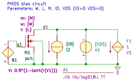

biasP
.lib lib/log018.l TT
B1 0 g1 V=0.9*(1-tanh(I(V1)))
F1 d1 0 V1 1
I2 d1 0 {ID}
M1 d1 g1 0 0 pch m={M} w={W} l={L}
V1 0 d1 {VDS}
.end
Go to biasP_index
SLiCAP: Symbolic Linear Circuit Analysis Program, Version 4.0.8 © 2009-2025 SLiCAP development team
For documentation, examples, support, updates and courses please visit: analog-electronics.tudelft.nl
Last project update: 2025-12-13 16:59:40